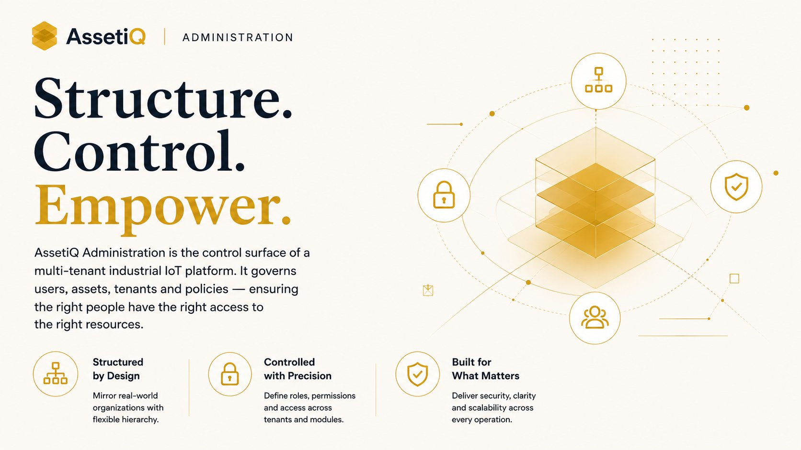

Eight years designing for industrial IoT — where the user wears gloves, stands in the sun, and cannot afford to get it wrong. I own the full arc, from functional analysis to the shipped screen.
An electrical engineer who became a product designer — and never stopped reading the schematic.
I spent eight years turning complex industrial IoT platforms into interfaces that field workers, operators, and enterprise teams can use without a manual. My background in Electrical & Electronics Engineering means I don't need the domain explained — I design from inside it.
Most recently I was the sole product designer on AssetiQ, a multi-tenant IoT SaaS platform spanning five industrial verticals, with enterprise end customers including Arkema, Fujifilm and ChampionX. I owned every design decision end to end: research, interaction, interface, and the handoff that engineering builds from.
I'm not a stage in the product process. I'm the spine that runs through it.
An EEE foundation plus eight years of design — genuine fluency in the technical systems behind the interface, not a designer working at arm's length from the domain.
Functional analysis, requirement analysis, design thinking, UX, UI handoff, product strategy, vision alignment, team leadership — held by one person, in sequence.
Sole designer on a live enterprise platform — production launches delivered against named industrial clients, with no design org to fall back on.
Designing the control layer of a multi-tenant industrial IoT platform — where one interface governs users, assets, and access across five verticals and multiple enterprise tenants.

Building a shared mobile component library from scratch as a one-person design function — and shipping it through to a live production vertical.
The administration layer is where a multi-tenant platform either stays manageable or quietly becomes unmanageable. This is how I designed the control surface that holds AssetiQ together.
AssetiQ is a multi-tenant IoT SaaS platform serving five industrial verticals — LiftiQ, ReeferiQ, CloudiQ, TankiQ and FlowiQ — with enterprise end customers including Arkema, Fujifilm and ChampionX. Every tenant brings its own users, assets, hierarchies and access rules. The administration layer is the single surface where all of that is configured and controlled.
Multi-tenant administration carries a hard tension: it must be powerful enough for complex enterprise configuration, yet simple enough that an operator isn't lost in it. The interface has to scale across very different verticals without fragmenting into five disconnected experiences.
As the only designer on the platform, I owned this end to end — from functional and requirement analysis, through interaction and interface design, to the handoff engineering built from. I worked the problem as a system: defining the structure first, then the screens.
The result was an administration experience built around a consistent model — so that configuring users, assets and access followed the same logic regardless of vertical or tenant.
Over my tenure the platform grew from roughly $60K to $200K+ in ARR while expanding across its five verticals — with the administration layer as the backbone holding multi-tenant operations together.
Building shared design infrastructure as a one-person design function — and the honest story of taking it from zero to a real, shipped library on a live vertical.
AssetiQ's verticals were each evolving their own mobile patterns. Without a shared foundation, every new screen meant re-deciding the basics — and consistency drifted vertical by vertical. Geist began as the answer to that drift: a common component library for mobile, across iOS and Android.
I was a design function of one. Building shared infrastructure usually takes a team; I had to scope Geist to what one person could realistically build, maintain, and actually get adopted — without it becoming a half-finished system that no one trusted.
I made a deliberate scoping call: build Geist at the component level first — a reliable, well-structured library of mobile components in Figma — rather than over-reaching for a full token architecture the team couldn't yet support. Get real components into real product, then mature the system from there.
Geist gave CloudiQ a consistent, reusable set of mobile components — a shared vocabulary that made the interface coherent and sped up the design of new screens.
Geist shipped into production on CloudiQ — the platform's most mature vertical. It is a component-level library, not yet a fully tokenized design system, and I'm clear-eyed about that: it's real, useful infrastructure with a defined next stage of maturity.
Open to Senior Product Designer roles — Bangalore or remote. The fastest way to reach me is below.